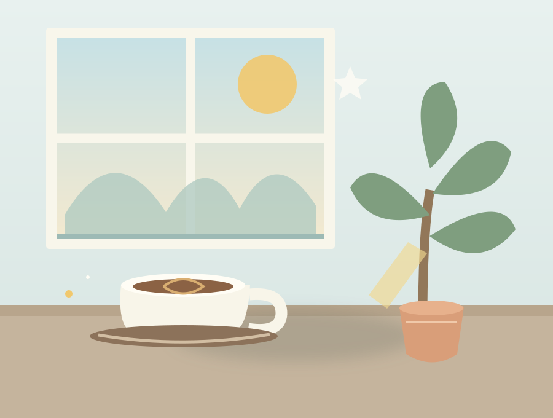

尊重每一份風味
用心認識咖啡豆的產地與特色，讓風味自然地說自己的故事。
A LITTLE STORY, A LOT OF HEART
讓一杯咖啡，成為日常裡剛剛好的停頓。
OUR BEGINNING
01有時候，生活的步伐太快，我們便忘了替自己留一點時間。可飛咖啡的起點，是一個簡單的念頭：如果有一個地方，能讓人坐下來，好好喝完一杯咖啡，會不會就能找回一點自己的節奏？
於是，我們把對咖啡的喜歡，放進挑豆、烘焙與空間的每個細節。可飛是一個示範品牌故事，期待未來由你補上真正的創立故事，讓每段文字都來自品牌自己的記憶。
WHAT WE BELIEVE
三個簡單的堅持，
陪一杯咖啡好好完成。
用心認識咖啡豆的產地與特色，讓風味自然地說自己的故事。
不急著追逐濃烈，只想讓每一杯都保有舒服、清楚的香氣。
以親切而不打擾的方式，留給每位來訪的人剛剛好的空間。

A CORNER OF YOUR OWN ☼OUR LITTLE CORNER
我們喜歡自然光、木頭的溫度，還有可以自在坐一會兒的空間。無論是獨自閱讀、與朋友聊聊，或只是安靜喝杯咖啡，都希望你能依照自己的步調，好好享受這段時間。
本地佔位插畫｜實際環境照片待補
前往聯絡我們